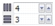

Быстрые ссылки на процедуры, описанные на этой странице:
• |
• |
Можно нарисовать сетку и задать для нее число строк и столбцов. Сетка — это сгруппированный набор прямоугольников, которые можно разъединять.
| Рисование сетки |
1. |
В наборе инструментов выберите инструмент Разлинованная бумага .
|
2. |
Введите значения в верхней и нижней части поля Столбцы и строки
 на панели свойств.
|
Значение, введенное в верхней части поля, означает число столбцов; значение, введенное в нижней части поля, означает число строк. |
3. |
С помощью курсора укажите место, где требуется расположить сетку.
|
4. |
Для создания сетки перетащите курсор по диагонали.
|
Если требуется нарисовать сетку от центра к краю, при
перетаскивании курсора удерживайте нажатой клавишу Shift. Если
требуется нарисовать сетку с квадратными ячейками, при
перетаскивании курсора удерживайте нажатой клавишу Ctrl.
|
| Отмена группировки сетки |
1. |
Выберите сетку с помощью инструмента Указатель |
2. |
Выберите Упорядочить |
Можно также разъединить сетку, нажав на панели свойств кнопку
Отменить группировку.
|
Copyright 2012 Corel Corporation. Все права защищены.